항공전자정비기능사 (2004-04-04 기출문제)
1과목: 임의 구분
1. 항공기에 장착되어 있는 무선통신장치 중 주로 단거리 무선통신으로 이용되는 것는?
- 중파 무선통신장치
- 단파 무선통신장치
- 초단파 무선통신장치
- 마이크로파 무선통신장치
(정답률: 알수없음)

2. 확성장치(PA system)란?
- 승객에게 영화나 텔레비전을 상영해 주는 장치이다.
- 승객이 승무원에게 요구사항을 말하는 장치이다.
- 승객에게 어떤 정보나 안내방송 등을 하는 방송 장치이다.
- 승객이 Headphones(수신기)으로 노래를 듣도록 한 장치이다.
(정답률: 알수없음)
3. 다음 그림은 널 레퍼런스(null reference)형 글라이드 슬로프 공중선의 지향성을 나타낸 것이다. ⓐ 가 뜻하는 성분을 옳게 설명한 것은?
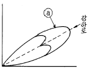
- 측대파 - 150[Hz] + 90[Hz]
- 반송파 + 150[Hz] + 90[Hz]
- 측대파 + 150[Hz] - 90[Hz]
- 측대파 + 150[Hz] + 90[Hz]
(정답률: 알수없음)
4. 비행 data 기록장치(FDR)에 기록되는 data가 아닌 것은?
- 고도
- 대기속도
- 기수방위
- 비행예정(schedule)
(정답률: 알수없음)
5. 항공기내의 무선통신 및 기내 전화장치의 대화 내용을 기록하는 장치는?
- 디지탈 비행 데이터 기록장치(DFDR)
- 비행자료 기록장치(FDR)
- 조종실 음성기록장치(CVR)
- 컴퓨터 기록장치
(정답률: 알수없음)
6. 비행중인 항공기의 각종 자료를 수집 기록하여 이것을 기상 및 지상에서 처리 분석하여 항공기의 효율적인 운용을 하는 장치는?
- 비행기록집적장치(AIDS)
- 비행자료기록장치(FDR)
- 조종실 음성기록장치(CVR)
- 관성항법장치(INS)
(정답률: 알수없음)
7. 항공전자장치 중 항공기 안전 운항과 직접 관계가 없는 것은?
- VHF 무선 통신 장치
- 자동방향 탐지기(ADF)
- 항공 교통 관제(ATC)
- 비행 data 기록 장치(FDR)
(정답률: 알수없음)
8. 자동방향 탐지기(ADF)에 사용되는 주파수대(Frequency -Band)는?
- 중파대
- 단파대
- 초단파대
- 극초단파대
(정답률: 알수없음)
9. 항공기의 항법(NAVIGATION)을 위한 항행 보조장치가 아닌것은?
- 방향 탐지기(ADF)
- 초단파 전방향 표지기(VOR)
- 무선통신장치(HF, VHF)
- 거리 측정장치(DME)
(정답률: 알수없음)
10. 레이다의 목표물 탐지에 대한 기본 요건을 설명한 것으로 옳지 않은 것은?
- 레이다 안테나와 목표물 간에 차단물체가 없어야 한다.
- 목표물은 레이다의 최대 탐지거리 이내에 있어야 한다.
- 목표물은 레이다의 최소 탐지거리 밖에 있어야 한다.
- 특정의 사물을 탐지하기 위해서는 주위의 물체 보다 특정사물의 반사 에너지가 약해야 한다.
(정답률: 알수없음)
11. 거리측정장비(DME)에 대한 설명으로 옳지 않은 것은?
- 전파의 속도가 일정한 것을 이용하며 지상 무선국과의 거리를 측정하는 장치이다.
- 지상에서 질문 펄스를 항공기에 보내어 시간을 측정함으로서 거리를 산출한다.
- 통상 초단파 전방향 무선표지기(V.O.R)국에 병설되어 있는 주요한 항법 보조 시설이다.
- 송/수신용 안테나는 외부에 설치되어 있으며 블레이드 타입(blade type)이다.
(정답률: 알수없음)
12. 초단파 전방향 무선표지장치(VOR)의 주파수 범위는?
- 2[㎒] ∼ 29.999[㎒]
- 108[㎒] ∼ 118[㎒]
- 125[㎒] ∼ 135[㎒]
- 329[㎒] ∼ 335[㎒]
(정답률: 알수없음)
13. 변조 주파수 및 Keying 부호에 따라 식별되는 Marker 중 1300Hz의 Dot 및 Dash 교대 연속음이 들리는 곳은?
- 내측 마커비콘(Inner marker beacon)
- 중앙 마커비콘(Middle marker beacon)
- 외측 마커비콘(Outer marker beacon)
- 중앙 마커비콘과 내측 마커비콘 사이를 통과하는 곳
(정답률: 알수없음)
14. 로칼라이저(localizer)에 대한 설명 중 옳은 것은?
- 코스의 중심은 반송파 패턴(pattern)만 있으므로 90[㎐]와 150[㎐]의 변조도는 같다.
- 코스를 향하여 좌의 영역에서는 90[㎐]의 반송파와 측파대의 세력은 역상이다.
- 코스를 향하여 우의 영역에서는 150[㎐]의 반송파와 측파대의 세력은 역상이다.
- 활주로에 대한 적절한 진입각을 나타내는 계기 착륙장치이다.
(정답률: 알수없음)
15. 항공기가 글라이드 패스 빔(Glide Path Beam) 중앙으로부터 밑에 있고 로컬라이저(Localizer Beam) 중앙으로 부터 우측(조종사 기준)에 있을 경우 크로스 포인터(cross pointer)지침의 지시는?
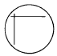
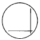
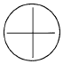
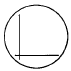
(정답률: 알수없음)
16. 자동비행 장치(Automatic Flight Control System)에 해당되지 않는 것은?
- 자동 조종 장치(Automatic pilot sys.)
- 자동 추력 제어 장치(Autothrottle sys.)
- 자동 방향 탐지기(Automatic Direction Finder)
- 자동 착륙 장치(Automatic Landing sys.)
(정답률: 알수없음)
17. 자동 추력 제어장치(Automatic throttle control - system)의 입력신호가 아닌 것은?
- 대기속도(對氣速度 : TAS)
- ENGINE의 압축비(ENGINE PRESSURE Ratio)
- 대기온도(OAT or TAT)
- 연료 소모량(Fuel consumption)
(정답률: 알수없음)
18. 자동조종장치 구성 중 ROLL채널(CHANNEL)의 기본 방식은 ?
- 관성항법
- 초단파 전방향
- 로칼라이저
- 기수방위
(정답률: 알수없음)
19. 승강타 위치의 함수로써 움직여지는 비행기 조종표면은?
- 보조익
- 방향타
- 수평안정판
- 페달
(정답률: 알수없음)
20. 다음 송/수신용 플러그(PLUG)에서 마이크(MiKE)를 연결하면 어느 부위를 거쳐 신호가 전달되는가?
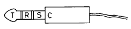
- T & R
- T & S
- R & S
- S & C
(정답률: 알수없음)
2과목: 임의 구분
21. HF 기계적 자동 동조 송신기에서 기계적 자동 동조에 의해 한번의 동작으로 주파수를 선택하는 기구를 무엇이라 하는가 ?
- 메카니칼 포지셔너(mechanical positioner)
- FS 변환기
- 신세사이저
- D/A 변환기
(정답률: 알수없음)
22. 다음 중 수직 안테나의 지향 특성은?
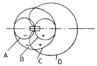
- A
- B
- C
- D
(정답률: 알수없음)
23. "회전하는 물체의 축은 변전과 변위에 대하여 지탱할 수 있다" 는 내용을 기본 법칙으로 이용한 것은?
- 자이로 스코프
- 싱크로 스코프
- 짐벌
- 로우터
(정답률: 알수없음)
24. 계기 착륙장치에서 항공기에 대해 착륙 예정점을 기점으로 하여 경사각을 따라 수직면의 유도를 행하는 장치는?
- 로컬라이저(localizer)
- 글라이드 슬로프(glide slope)
- 마커비컨(marker beacon)
- 호밍비컨(homing beacon)
(정답률: 알수없음)
25. 지상 송신국으로부터 원거리에 있는 항공기에 항행 위치를 제공하는 장치는?
- 로런(Loran)
- 거리측정시설(DME)
- 기상레이더(Weather radar)
- 관성항법장치(INS)
(정답률: 알수없음)
26. 저항 5[Ω]과 6[Ω]의 병렬회로에 300[V]의 전압을 가할 때, 5[Ω]에 흐르는 전류[A]는?
- 50
- 60
- 70
- 80
(정답률: 알수없음)
27. 자체 인덕턴스 L1, L2, 상호 인덕턴스 M의 코일을 반대 방향으로 직렬 연결하면 합성 인덕턴스는?
- L1 + L2 + M
- L1 + L2 - M
- L1 + L2 + 2M
- L1 + L2 - 2M
(정답률: 알수없음)
28. 어떤 코일에 60[㎐], 10[V]의 교류전압을 가하여 1[A]의 전류가 흐른다면, 이 코일의 인덕턴스[mH]는 얼마인가?
- 약 13.3
- 약 15.9
- 약 26.5
- 약 62.8
(정답률: 알수없음)
29. 0.4[㎌]와 0.6[㎌]의 두 콘덴서를 직렬로 접속했을 때의 합성 정전 용량은 얼마인가?
- 0.024[㎌]
- 1[㎌]
- 0.4[㎌]
- 0.24[㎌]
(정답률: 알수없음)
30. 공기중에 3 x 10-3[㏝]와 5 x 10-3[㏝]의 두 자극이 10[㎝] 거리에 있을 때, 자극간에 작용하는 힘으로 적절한 값은?
- 9.5[N]
- 19[N]
- 95[N]
- 190[N]
(정답률: 알수없음)
31. R = 10[㏀], C = 0.5[㎌]의 직렬회로에 100[V]의 직류 전압을 인가했을 때, 시상수는?
- 20[sec]
- 10[sec]
- 50[㎳]
- 5[㎳]
(정답률: 알수없음)
32. 정전 용량이 같은 콘덴서 2개를 병렬로 연결하였을 때의 합성 용량은 이것을 직렬로 연결하였을 때의 몇배인가?
- 2
- 4
- 1/2
- 1/4
(정답률: 알수없음)
33. 어떤 정현파 교류 전류의 평균값이 3.8[A]이다. 실효값은 몇[A]인가?
- 2.2
- 3.2
- 4.2
- 5.2
(정답률: 알수없음)
34. V = 100[V]의 교류를 Z = 8+j6[Ω]의 회로에 가하면 Z에서 소비되는 전력[W]은?
- 400
- 600
- 800
- 1000
(정답률: 알수없음)
35. 200[V]를 가하여 5[A]가 흐르는 직류 전동기를 7시간 사용하였다. 전력량은 얼마인가?
- 1[KWh]
- 5[KWh]
- 6.2[KWh]
- 7[KWh]
(정답률: 알수없음)
36. 전자사태(avalanche)현상에 관한 설명 중 틀린 것은?
- PN접합에 강한 역전압을 걸어줄 때 일어나는 현상이다.
- 불순물 농도가 대단히 높은 경우에 주로 이런 현상이 일어난다.
- 급격한 전류 증대현상이 일어난다.
- 공핍층내에서는 전장에 의해 가속된 전자나 정공이 원자와 충돌하는 현상이 일어난다.
(정답률: 알수없음)
37. 접합형 FET의 전달 콘덕턴스 gm을 나타내는 식은? (단, 핀치오프전압 Vp는 일정하며, 드레인의 전류 변화분을 △ＩD, 게이트의 전류 변화분을 △ＩG, 게이트 소스간의 전압 변화분을 △VGS, 드레인과 소스간의 전압변화분을 △VDS라 한다.)
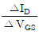
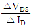
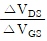
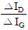
(정답률: 알수없음)
38. 대역폭이 가장 넓은 증폭기는?
- 쵸크결합증폭기
- 저항결합증폭기
- 재생증폭기
- 스태거증폭기
(정답률: 알수없음)
39. 베이스 접지일 때의 전류 증폭도 α= 0.95, 이미터 전류 ＩE=6mA, 컬렉터 역포화 전류 Ｉco = 10μA일 때 이미터접지형의 컬렉터 전류 ＩC 는 몇 mA 인가?
- 5.71
- 6.21
- 6.71
- 7.21
(정답률: 알수없음)
40. 80%변조된 AM파를 자승검파할 때의 신호파의 왜율은?
- 8%
- 20%
- 30%
- 80%
(정답률: 알수없음)
3과목: 임의 구분
41. 그림에서 시정수가 매우 작을 경우의 출력파형은?
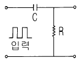
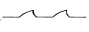
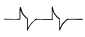
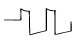
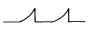
(정답률: 알수없음)
42. 그림과 같은 논리회로의 출력 D가 옳은 것은?
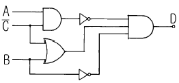
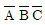
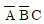
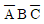
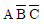
(정답률: 알수없음)
43. 논리식
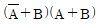
와 등가인 것은?- AB
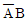
- A
- B
(정답률: 알수없음)
44. 이상형 CR발진회로의 CR을 3단 계단형으로 조합할 경우, 컬렉터측과 베이스측의 총 위상 편차는 몇 도인가?
- 90
- 120
- 180
- 360
(정답률: 알수없음)
45. 전자를 자계방향과 직각으로 입사시키면 어떤 운동을 하는가?
- 직선운동
- 포물선운동
- 원운동
- 톱날파운동
(정답률: 알수없음)
46. 전원회로에서 부하로 최대전류를 공급하려면 어떻게 하여야 하는가?
- 전원의 내부저항이 0 이어야 한다.
- 전원의 내부저항과 부하저항이 같아야 한다.
- 전원의 내부저항보다 부하저항이 커야 한다.
- 전원의 내부저항보다 부하저항이 작아야 한다.
(정답률: 알수없음)
47. RC 평활회로에서 리플률을 줄이는 방법으로 옳은 것은?
- R과 C를 작게 한다.
- R만 작게 한다.
- R과 C를 크게 한다.
- C만 크게 한다.
(정답률: 알수없음)
48. 그림은 UJT를 사용한 펄스발생회로의 한 예이다. UJT에 전류가 흘러서 펄스를 발생할 때 콘덴서 CT의 동작은 어떤 상태인가?
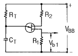
- 충전상태
- 방전상태
- 단락상태
- 접지상태
(정답률: 알수없음)
49. 내부저항 4㏀, 최대눈금 50V의 전압계로 300V의 전압을 측정하기 위한 배율기 저항은 몇 Ω 인가?
- 670
- 800
- 20000
- 24000
(정답률: 알수없음)
50. 정류형 계기가 저 전압용으로 적합한 이유는?
- 회전 토크가 약하다.
- 소비전력이 적으므로
- 지시계기로는 적합치 않다.
- 외부 자계의 영향을 크게 받기 때문에
(정답률: 알수없음)
51. 측정자의 눈금 오독, 부주의로 발생하는 오차는?
- 이론 오차
- 우연 오차
- 계기 오차
- 개인 오차
(정답률: 알수없음)
52. 단상 전력계로 3상 전력을 측정하고자 한다. 측정법이 아닌 것은?
- 1 전력계법
- 2 전력계법
- 3 전력계법
- 4 전력계법
(정답률: 알수없음)
53. 고주파수 측정에 사용되는 주파수계가 아닌 것은?
- 헤테로다인 주파수계
- 진동편형 주파수계
- 흡수형 주파수계
- 동축 주파수계
(정답률: 알수없음)
54. 전압계에 100〔V〕를 가했을 때 전압계의 지시가 101.5〔V〕이면 그 오차율은?
- +1.48〔%〕
- +1.5〔%〕
- -1.48〔%〕
- -1.5〔%〕
(정답률: 알수없음)
55. 계수형 주파수계의 특징 중 옳지 않은 것은?
- 온도에 의한 영향이 많다.
- 파형 전압에 의한 영향이 적다.
- 조작이 간단하고, 결과가 숫자로 나타난다.
- 어떤 파형의 교류라도 적당한 크기이면 주파수측정이 가능하다.
(정답률: 알수없음)
56. 다음 브리지 회로에 검류계 G에 전류가 흐르지 않는 평형조건이 되었다. 다음 임피던스로 옳은 것은?
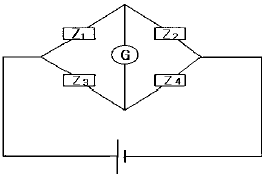
- Z1Z4 = Z2Z3
- Z1Z3 = Z2Z4
- Z1Z2 = Z3Z4
- Z1Z4 ≠ Z2Z3
(정답률: 알수없음)
57. 디지털 주파수계에서 발생하는 오차가 아닌 것은?
- 게이팅 에러 오차
- 개인적 오차
- 트리거 레벨 오차
- 타임 베이스 오차
(정답률: 알수없음)
58. 지시 계기의 3대 요소가 아닌 것은?
- 제동 장치
- 유도 장치
- 구동 장치
- 제어 장치
(정답률: 알수없음)
59. 낮은 주파수에서도 출력 파형이 좋고, 취급이 간편하여 저주파 발진기로 가장 널리 쓰이는 것은?
- LC 발진기
- RC 발진기
- RL 발진기
- 수정 발진기
(정답률: 알수없음)
60. 정전 전압계의 특징으로 옳지 않은 것은?
- 정전 전압계 또는 전위계는 전압을 직접 측정하는 계기이다.
- 정전 전압계의 제동은 공기 제동이나 액체 제동 또는 전자 제동을 사용한다.
- 주로 저압 측정용 전압계로 많이 쓰인다.
- 대표적인 예로는 아브라함 빌라드 형과 캘빈 형의 정전 전압계가 있다.
(정답률: 알수없음)